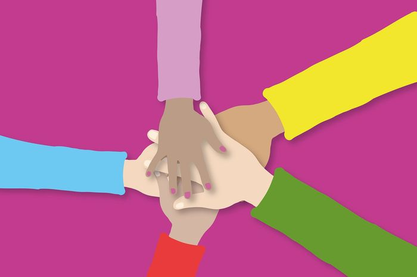

Kalian pasti pernah mendengar bahkan mengucapkan kata-kata ini, bukan? Yap! Kita selalu melakukannya setiap kita bermain hompimpa
Hompimpa merupakan permainan yang pasti pernah dimainkan oleh hampir seluruh anak di Indonesia. Ada yang bisa menjelaskan cara bermainnya?
Dalam permainan Hompimpa, siapa yang berhasil mengeluarkan sisi tangan yang berbeda akan keluar sebagai pemenangnya.
Sekarang kalian ajak dua orang, bisa orang tua, guru atau teman-teman untuk bermain hompimpa Kira-kira apakah kalian bisa menang? Seberapa besar kemungkinan kalian untuk menang? Hal tersebut ternyata bisa sangat berhubungan erat dengan materi matematika kita hari ini, loh. Mari kita cari tahu bersama-sama
Dari permainan hompimpa kamu dengan dua lawanmu, terdapat berbagai kemungkinan yang bisa terjadi. Kira-kira apakah kalian bisa menyebutkan kemungkin-kemungkinan tersebut?
Kemungkinan-kemungkinan tersebut bisa kita susun dalam bentuk tabel
Kalian juga bisa mendaftar kemungkinan-kemungkinan itu
Daftar kemungkinan yang sudah kita susun, baik dalam bentuk tabel ataupun dalam daftar dalam matematika bisa kita Ruang Sampel (S). Jadi, ada berapakah ruang sampel yang ditemukan?
Dari kemungkinan-kemungkinan tadi, manakah yang bisa membawa kamu menuju kemenangan? Seberapa besar kemungkinan kamu untuk menang?
Bagaimana jika kalian bermain hompimpa bersama 3, 4, dan bahkan 5 teman kalian. Seberapa besar kesempatan kalian untuk menang?
Bagaimana? Hompimpa menjadi semakin menyenangkan, bukan? Tahukah kalian bahwa kata-kata "hompimpa alaium gambreng" berasal dari bahasa sansekerta yang berarti "Dari Tuhan Kembali Ke Tuhan, Mari Kita Bermain". Ternyata kata-kata yang sering kita ucapkan memiliki arti yang bermakna, ya. Jadi, sebelum bermain hompimpa, jangan lupa untuk mengatakan ...